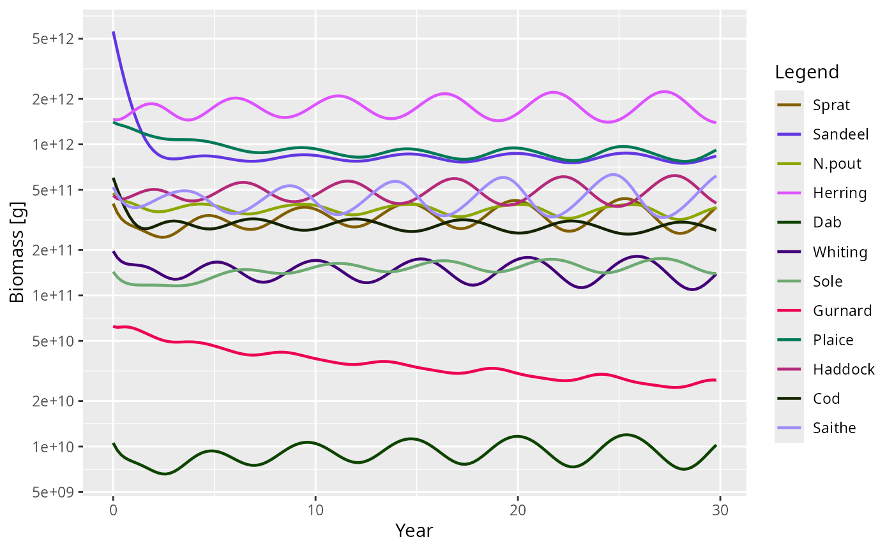
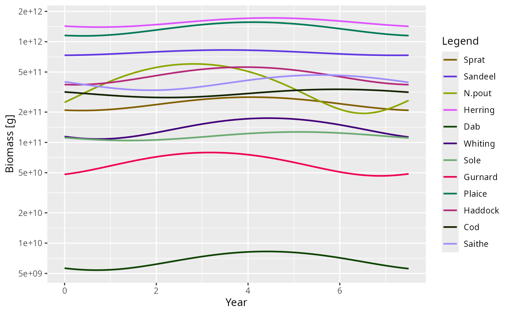

Dynamic stability and Hopf bifurcations
Source:vignettes/dynamic_stability.Rmd
dynamic_stability.RmdIntroduction
In a mizer model, a steady state represents an equilibrium where the
abundance of every species at every size remains constant over time.
While steady() attempts to find such a state by projecting
the dynamics forward in time until changes stop, this only works if the
steady state is dynamically stable.
If a steady state is unstable, small perturbations will grow rather than decay, and the system will naturally move away from the steady state, often settling into persistent oscillations (a limit cycle) or more complex dynamics.
Mizer provides the steadyNewton() function to find
steady states irrespective of their stability by solving the algebraic
equilibrium equations directly. Once a steady state is found, its
stability can be analysed using getStability().
This vignette explains how to perform this stability analysis, what
the results mean, how mizer’s steady-state finders detect and
characterise limit cycles, and how to use the linearised limit cycle
approximation provided by getLimitCycleSim() to understand
emergent oscillations around a Hopf bifurcation.
Linear stability analysis
Mizer projects the state of the ecosystem forward in discrete time steps. We can write this discrete-time map abstractly as:
\[ N(t+\Delta t) = G(N(t)) \]
where \(N(t)\) represents the full state vector (abundances of all species at all sizes) at time \(t\). At a steady state \(N^*\), we have \(N^* = G(N^*)\).
Because abundances in a mizer model span dozens of orders of magnitude across the size spectrum, evaluating stability in terms of absolute perturbations (e.g., \(N(t) = N^* + \delta N(t)\)) can be numerically poorly-scaled. Instead, it is more natural to consider multiplicative (relative) perturbations, where we perturb the steady state by a small relative amount \(x(t)\):
\[ N_i(t) = N_i^* \left(1 + x_i(t)\right) \]
Linearising the dynamics for these small relative perturbations \(x(t)\) gives:
\[ x(t+\Delta t) \approx K \, x(t) \]
where \(K\) is the relative Jacobian matrix. The elements of \(K\) describe the proportional change in species \(i\) resulting from a proportional change in species \(j\):
\[ K_{ij} = \frac{\partial \log G_i}{\partial \log N_j}(N^*) = \frac{N_j^*}{N_i^*} \frac{\partial G_i}{\partial N_j}(N^*) \]
Notice that \(K\) is related to the standard absolute Jacobian \(L\) (with elements \(L_{ij} = \frac{\partial G_i}{\partial N_j}\)) by a similarity transform \(K = D^{-1} L D\), where \(D\) is a diagonal matrix of the steady-state abundances \(N^*\). Because \(K\) and \(L\) are similar matrices, they have exactly the same eigenvalues \(\mu_i\).
While a pure discrete-time stability analysis would check if the
spectral radius \(\max_i |\mu_i| <
1\), doing so evaluates the stability of the numerical scheme
rather than the underlying mathematical model. Implicit numerical
schemes like the one mizer uses introduce severe “temporal numerical
diffusion” that artificially damps oscillations. To evaluate the true
continuous-time stability, getStability() maps these
discrete eigenvalues back to the exact continuous-time eigenvalues \(\lambda_i\) using the algebraic relation
\(\lambda_i = (1 - 1/\mu_i) / \Delta
t\).
Why does this exact mapping work? Mizer solves the continuous PDEs of the size spectrum using a fully implicit backward Euler step: \[ N(t+\Delta t) = N(t) + \Delta t \, \frac{dN}{dt}(t+\Delta t) \] If we define the continuous Jacobian as \(J = \partial(dN/dt)/\partial N\) and the discrete Jacobian of the one-step map as \(L = \partial N(t+\Delta t)/\partial N(t)\), differentiating the implicit step yields: \[ L = I + \Delta t \, J \, L \quad \implies \quad (I - \Delta t \, J) L = I \quad \implies \quad J = \frac{1}{\Delta t}(I - L^{-1}) \] This relates their eigenvalues exactly by \(\lambda_i = (1 - 1/\mu_i) / \Delta t\). By applying this mapping, we analytically strip away the temporal numerical diffusion of the implicit solver and recover the exact continuous-time stability.
The stability of the continuous-time mathematical steady state is determined by the real parts of these continuous eigenvalues. If the maximum real part is negative (\(\max_i \text{Re}(\lambda_i) < 0\)), every perturbation decays and the steady state is stable; if any real part is positive, some perturbation grows and it is unstable.
If you specifically want to study the numerical stability of mizer’s
Euler method for a particular time step, getStability()
optionally accepts a dt argument. The discrete eigenvalues
\(\mu_i\) will then reflect the
one-step map under that time step size, and the returned
spectral radius \(\max_i
|\mu_i|\) determines numerical stability (stable if \(<1\)).
(Note on numerical implementation: While analysing the relative
Jacobian \(K\) is conceptually natural,
computing it requires dividing by \(N_i^*\), which causes floating-point
overflow for structurally zero size classes (e.g., extinct species or
truncated tails). Therefore, getStability() numerically
computes the absolute Jacobian \(L\)
using finite-difference steps scaled multiplicatively to the local
density. This is mathematically equivalent to the relative analysis but
avoids dividing by zero, ensuring robust eigenvalue computation. Fast
decaying modes map to \(\mu \approx
0\), which can amplify numerical noise during the \(1/\mu\) inversion, so mizer safely filters
these out to isolate the dominant continuous eigenvalues.)
Driving the North Sea model unstable
Let’s load mizer and start with the standard North Sea model.
suppressMessages(devtools::load_all("..", quiet = TRUE))
params <- NS_paramsThe North Sea model at its default fishing effort is dynamically
stable, so it makes a rather uneventful example: perturb it and it
simply settles back down. To see something more interesting we increase
the fishing pressure, setting the effort of every gear to
1.5. This pushes the model across a Hopf
bifurcation into a regime where the steady state is
unstable.
Because the steady state is now unstable, steady()
cannot find it — projecting the dynamics forward would diverge away from
it. This is exactly the situation steadyNewton() is
designed for: it solves the equilibrium equations directly and therefore
finds the steady state regardless of its stability.
params_f15 <- steadyNewton(params, effort = 1.5)Diagnosing the instability
Is this steady state stable? We compute its stability metrics with
getStability().
stab_default <- getStability(params_f15, effort = 1.5)
stab_default$spectral_radius
#> [1] 0.9598178
stab_default$max_real_part
#> [1] 1.698354Notice the distinction between discrete numerical stability and
continuous physical stability: - The spectral radius
\(\max |\mu| = 0.96 < 1\), which
means the numerical one-step map of the default backward Euler solver at
\(\Delta t = 1\) is discretely stable.
The temporal numerical diffusion of backward Euler artificially damps
the oscillation. - Mapping back to continuous time reveals the true
physical PDE stability with max_real_part
\(\text{Re}(\lambda) = 1.7 > 0\),
showing that the continuous system is physically unstable.
To convert discrete eigenvalues \(\mu\) of the one-step map to continuous
eigenvalues \(\lambda\),
getStability() uses the Backward Euler transformation:
\[ \lambda = \frac{1 - 1/\mu}{\Delta t}
\] To ensure mathematical consistency across all state variables
and prevent fast-decaying modes from producing spurious eigenvalue
artifacts due to near-zero matrix inversion noise,
getStability() evaluates the resource step using the same
implicit Backward Euler scheme: \[
N_R(t+\Delta t) = \frac{N_R(t) + \Delta t \, r_R(w) c_R(w)}{1 + \Delta t
\, (r_R(w) + \mu_R(w))} \]
Although project() uses the exact analytical resource
solution (\(N_R(t+\Delta t) = N_R^* + (N_R(t)
- N_R^*) e^{-(r_R + \mu_R)\Delta t}\)) at each step, the discrete
eigenvalues \(\mu\) from
getStability() accurately reflect the numerical step in
project(method = "euler"). For fast resource modes (\(r_R + \mu_R \gg 1\)), both exact decay
(\(\mu_{exact} = e^{-(r_R + \mu_R)\Delta t}
\approx 0\)) and Backward Euler (\(\mu_{BE} = \frac{1}{1 + (r_R + \mu_R)\Delta t}
\approx 0\)) damp out perturbations within a single timestep. For
slow, coupled modes (\(|\mu| \approx
1\)) governing system stability, Taylor expanding around \(\Delta t = 0\) shows that \(\mu_{BE} = 1 - k\Delta t + \mathcal{O}(\Delta
t^2)\) matches \(\mu_{exact} = 1 -
k\Delta t + \mathcal{O}(\Delta t^2)\) to first order.
Furthermore, by default getStability() treats the
resource spectrum as a quasi-static fast variable that
instantly equilibrates to the fish. Analysing the full coupled
fish–resource system with include_resource = TRUE includes
the resource dynamics:
stab <- getStability(params_f15, effort = 1.5, include_resource = TRUE)
stab$spectral_radius
#> [1] 1.136188
stab$max_real_part
#> [1] 1.235902
stab$stable
#> [1] FALSEWith the full coupled fish–resource dynamics included, both the discrete numerical solver (\(\max |\mu| = 1.14 > 1\)) and the continuous PDE (\(\text{Re}(\lambda) = 1.24 > 0\)) are unstable.
To see how it is unstable, we look at the dominant eigenvalue (the one with the largest real part).
stab$eigenvalues[1]
#> [1] 1.235902+0.8479324iIt is complex with a positive real part (\(\lambda \approx 1.24 + 0.85i\)). A purely real, positive eigenvalue would signal monotone growth, but a complex pair with a positive real part means the perturbation grows while oscillating — a Hopf (or Neimark–Sacker) bifurcation. The period of this oscillation is set by the imaginary part of the eigenvalue,
\[ \text{Period} = \frac{2\pi}{|\text{Im}(\lambda)|} \text{ years}, \]
which mizer reports as dominant_period:
stab$dominant_period
#> [1] 7.410008So the linear analysis predicts a growing oscillation with a period of roughly 7.4 years.
Watching the limit cycle emerge with
projectToSteady()
We can confirm these predictions by projecting the dynamics with
projectToSteady().
Because the steady state is unstable, running the dynamics forward
will never “converge” to a fixed point in the usual sense.
projectToSteady() recognises this: it attaches a
"convergence" attribute to its result that reports whether
the trajectory settled on a stable fixed point or a limit cycle, along
with its period and relative amplitude. By passing
return_sim = TRUE, it returns a full MizerSim
object covering the run.
sim_cycle <- projectToSteady(params, effort = 1.5, t_max = 200, t_per = 0.2,
return_sim = TRUE, method = "tr_bdf2")
attr(sim_cycle, "convergence")
#> $type
#> [1] "cycle"
#>
#> $converged
#> [1] TRUE
#>
#> $distance
#> [1] 6.144612
#>
#> $residual
#> [1] 0.3030617
#>
#> $years
#> [1] 29.8
#>
#> $period
#> [1] 5.4
#>
#> $amplitude
#> [1] 0.6581569projectToSteady() correctly identifies the attractor as
a limit cycle with a period of about 5.4 years and a peak-to-trough
biomass amplitude of about 66% of the mean. Applied to a model with a
genuine stable steady state (such as the default params at
effort 0), the function reports type = "steady"
instead:
attr(projectToSteady(params, t_max = 100), "convergence")$type
#> [1] "steady"Because return_sim = TRUE returns a standard
MizerSim object, we can plot the emergence of the limit
cycle directly:
plotBiomass(sim_cycle)
Notice that the detected nonlinear period (about 5.4 years) is
slightly shorter than the dominant_period of about 7.4
years from the linear PDE analysis. This is expected: at effort 1.5 we
are beyond the bifurcation where nonlinearities reshape the
large-amplitude cycle. Close to the bifurcation point the two agree
closely; further from it the linear analysis remains an excellent
qualitative guide, correctly predicting an oscillatory instability.
Visualising the oscillation shape
Finally, getLimitCycleSim() constructs a
MizerSim object covering one period of the oscillation
in the linear approximation, using the leading complex
eigenvector. This isolates the pure shape of the cycle
— which species and sizes participate and with what phase — without the
growth or the nonlinear distortion of the full run.
lcs <- getLimitCycleSim(params_f15, include_resource = TRUE, amplitude = 1)Because lcs is an ordinary MizerSim object,
any of the standard mizer plotting functions can be used to explore it.
For example, the biomass over one period:
plotBiomass(lcs)
This linearised cycle gives a clear picture of the cohort-resonance pattern driving the oscillation — the mode shape that the full nonlinear limit cycle grows out of.
A caveat: the analysis assumes a smooth model
Everything in this vignette rests on the one-step map being
differentiable at the steady state, so that the finite-difference
Jacobian means something. That holds for models built from mizer’s own
rate functions, but not necessarily for a model carrying a custom rate
registered with setRateFunction(). If such a rate jumps as
a function of the abundances, steadyNewton() may stall and
getStability() can return a plausible-looking number that
describes neither branch of the dynamics.
The cheapest check is to re-run getStability() with a
different h: on a smooth model the spectral radius is
unchanged to several figures. See Discontinuous rate functions.